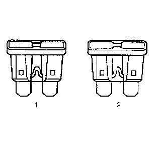
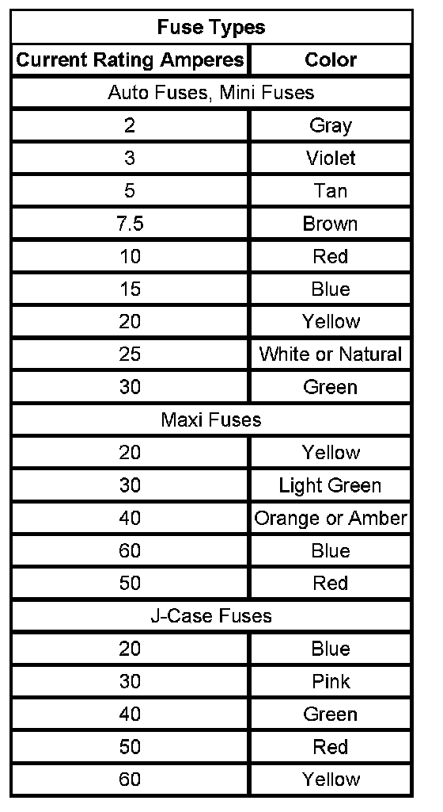

Circuit Protection - Fuses
CIRCUIT PROTECTION - FUSES

Fuse Types:

The fuse is the most common method of an automotive wiring circuit protection. Whenever there is an excessive amount of current flowing through a circuit the fusible element will melt and create an open or incomplete circuit. Fuses are an one time protection device and must be replaced each time the circuit is overloaded. To determine if a fuse is open, remove the suspected fuse and examine the element in the fuse for an open (2). If not broken (1), also check for continuity using a DMM or a continuity tester. If the element is open or continuity is suspect, replace the fuse with one of equal current rating.